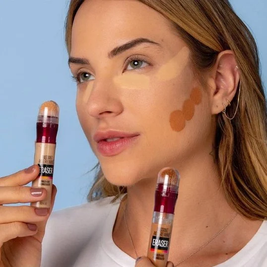
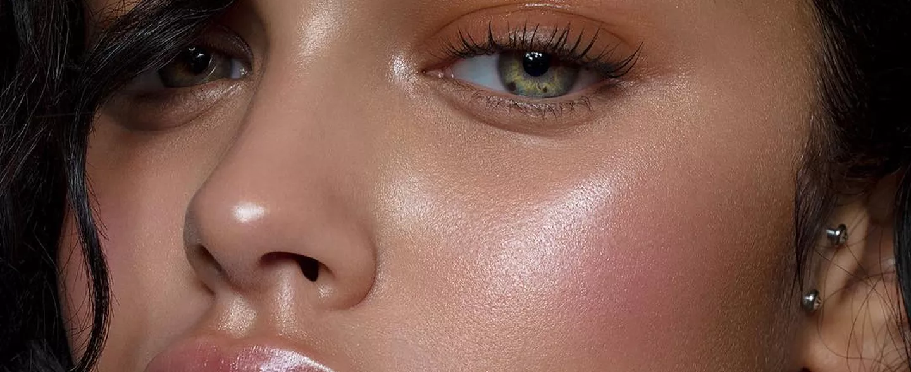

Em seguida aplicamos o contorno dando formato ao rosto e afinando,assim destacando o seus traços.
Aplique o blush na maça do rosto e levemente no dorso do nariz.
Aplique o iluminador na maça do rosto um pouco acima do blush,aplique no ossinho e na ponta do nariz,no canto interno dos olhos e no arco da sobrancelha.

